Player controls: current vs three directions
All four run on the real Mux Player 3.13.4 that public pages ship today, each as a custom theme template. The demo video is Mux's public sample. The prototype is throwaway.
Open the live prototypeKeys 1 to 4 switch variants. The color picker sets the brand color, so you can see each variant under a seller's palette.
Paused, mid-video
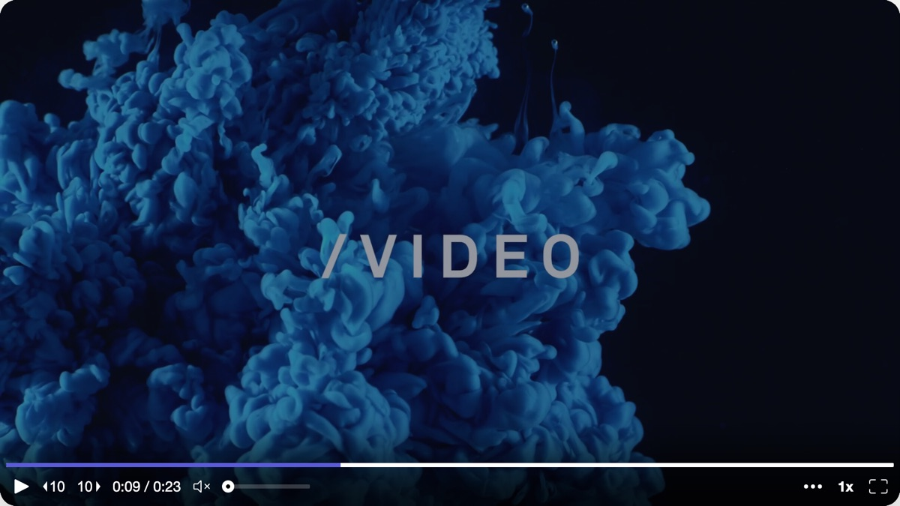
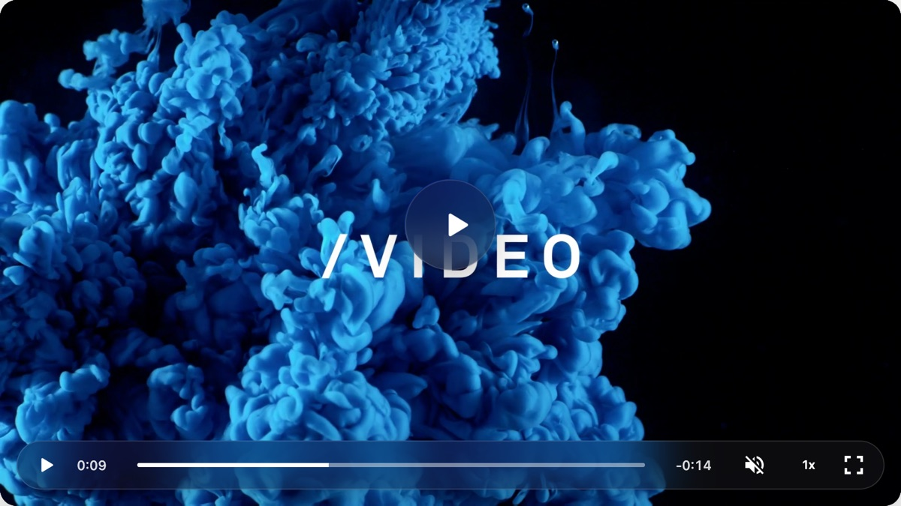
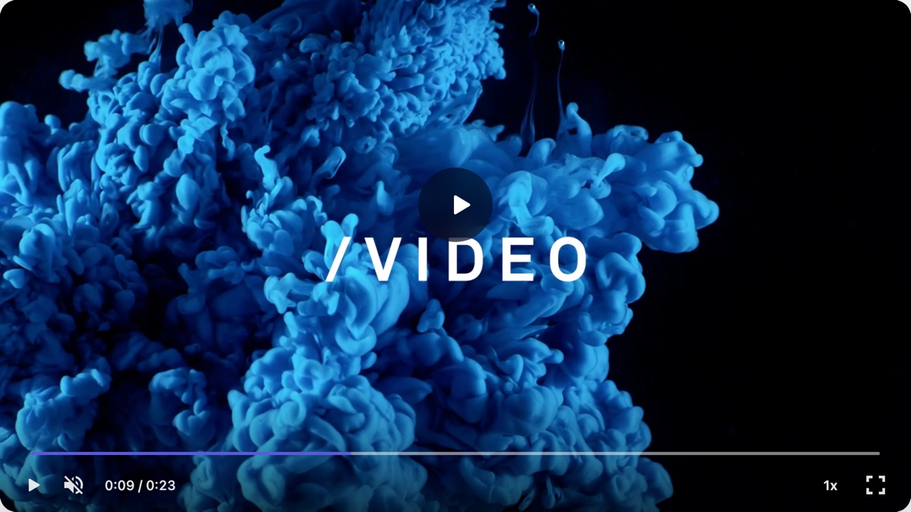
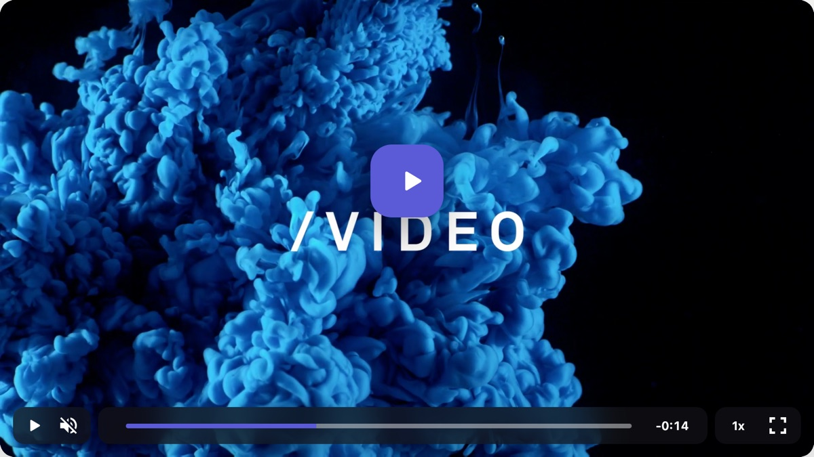
Before the first play
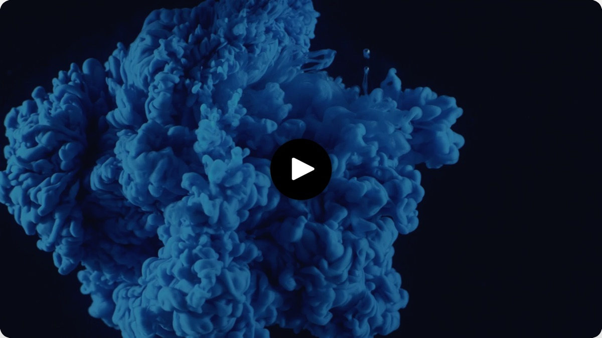
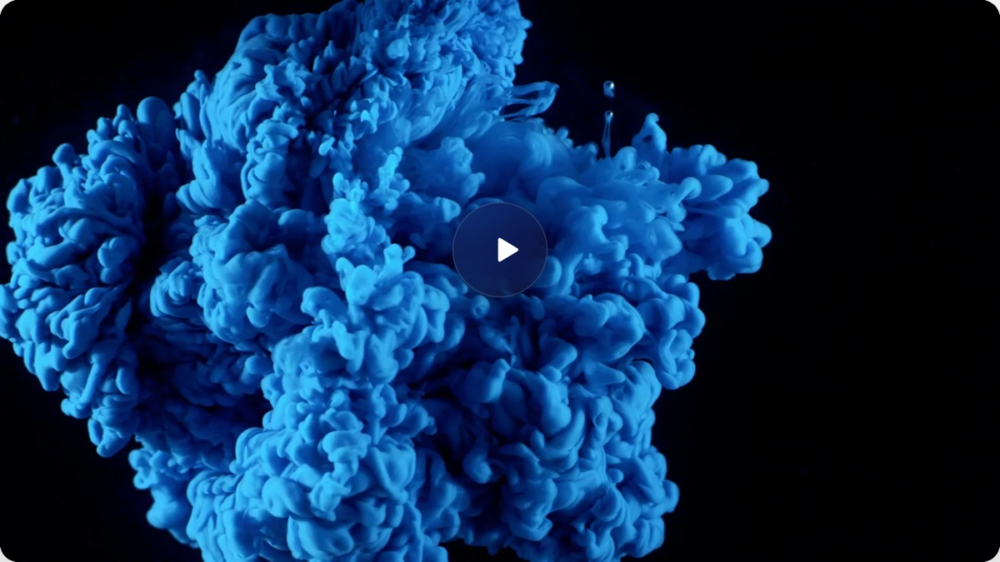
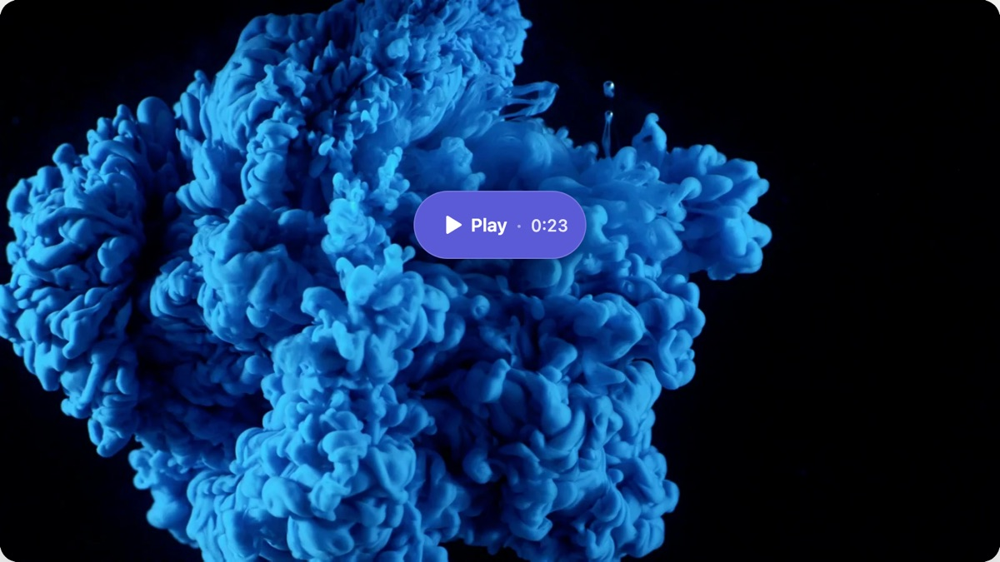
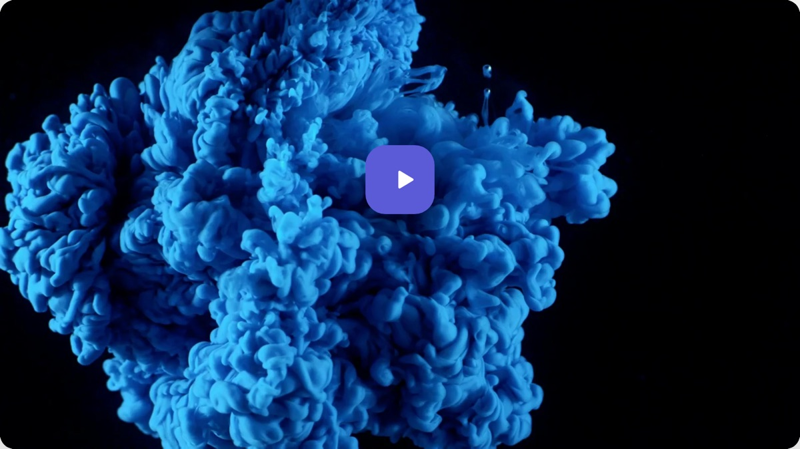
Hovering the scrubber
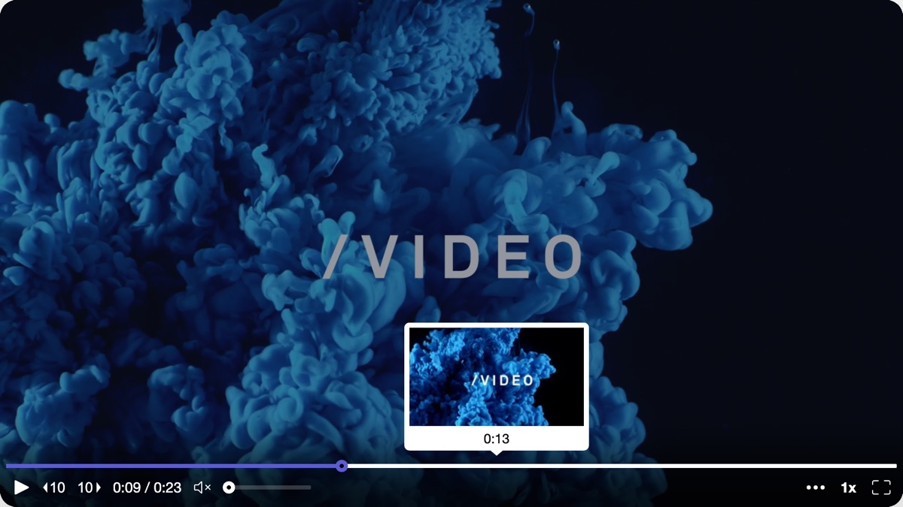
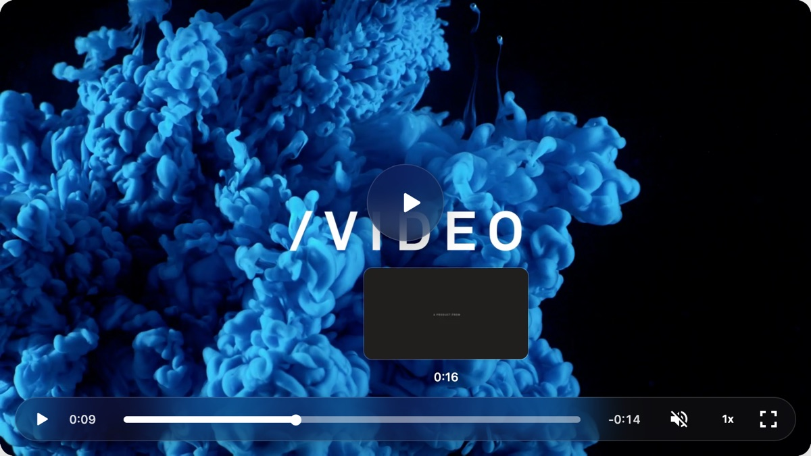
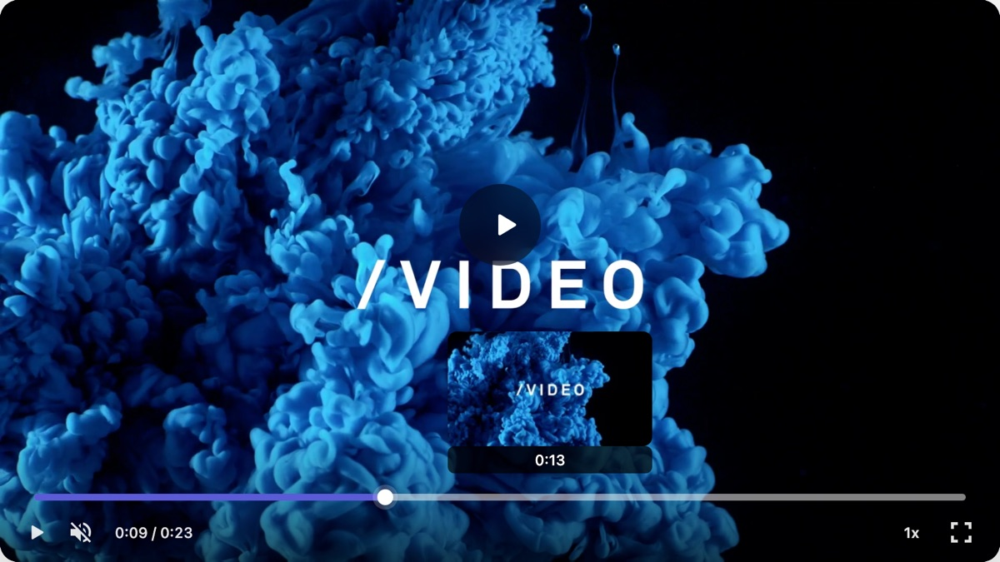
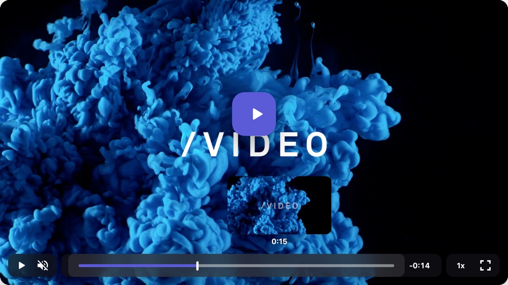
Phone, 390 px wide
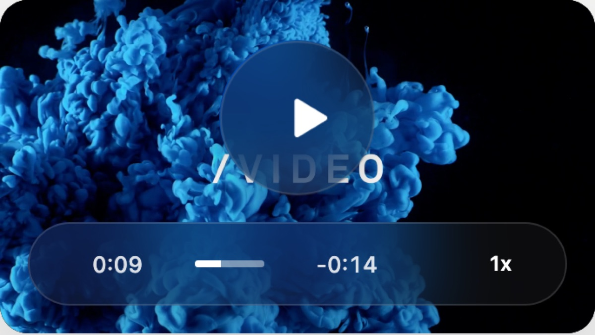
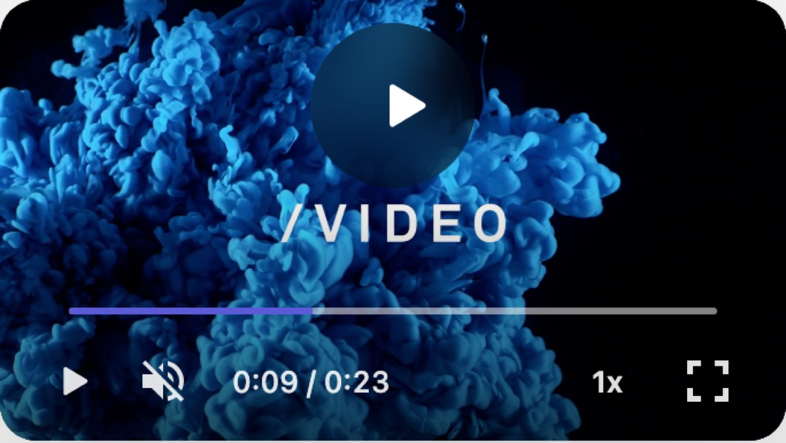
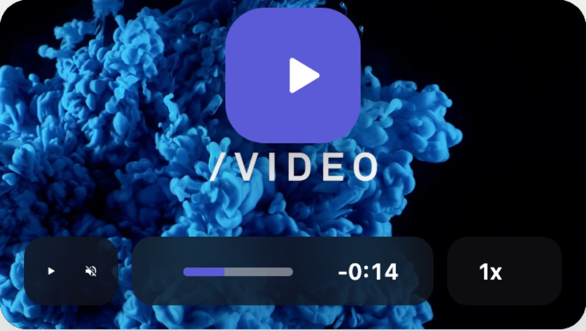
What the best players agree on
| Lesson | Who does it | What it means for Clarity |
|---|---|---|
| Never tint the whole frame on pause | YouTube 2025 stopped dimming paused video | Our --controls-backdrop-color fills the whole frame on every pause. Set it to transparent. |
| One bar, always in the same place | Netflix web, Frame.io V4, Apple HIG | Scrubber full width, then play, mute and time on the left, speed and fullscreen on the right. |
| Leave things out | Vimeo and Wistia let owners hide controls | A prospect watches once. Drop ±10s seek, the overflow menu, and the always-open volume slider. Show CC only when a track exists. |
| Thin scrubber at rest that grows on hover, with a tall hit area | YouTube Music, Mux's own default theme | 3 px at rest, 6 px on hover, 12 px thumb, 24 px hit area (WCAG 2.5.8). |
| A big first play button that states the length | Wistia, Loom | "Play · 2:14" in the seller's brand color. The bar stays hidden until the first play. |
| Bold, rounded icons in one weight, no tooltips | YouTube's 2025 icon refresh | One custom icon set. The current mix of thin and filled glyphs is a big part of why it looks cheap. |
| Hide quickly, come back instantly | media-chrome defaults | Hide after 2 s, never while paused. Fade in over 0.25 s and out over 1 s. |
| Keyboard and accessibility | YouTube, Loom, Apple HIG, WCAG 2.4.7 and 1.4.11 | Keep Space, K, J, L, M and F. Brand-color focus ring. Respect reduced motion. |